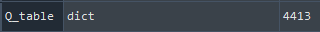
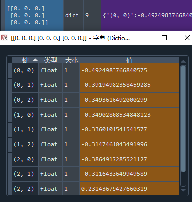
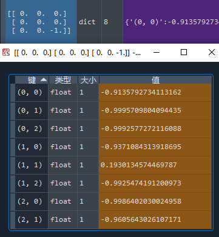
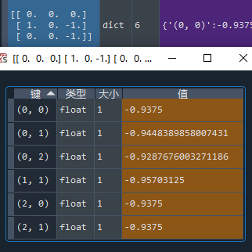
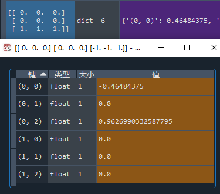

在 强化学习实战 | 表格型Q-Learning玩井字棋（一）搭个框架 中，我们构建了以Game() 和 Agent() 类为基础的框架，本篇我们要让agent不断对弈，维护Q表格，提升棋力。那么我们先来盘算一下这几个问题：
- Q1：作为陪练的一方，策略上有什么要求吗？
- A1：有，出棋所导致的状态要完全覆盖所有可能状态。满足此条件下，陪练的棋力越强（等同于环境越严苛），agent训练的效果越好。AlphaGo的例子告诉我们，陪练的策略也是可以分阶段调整的：前期先用人类落子的预测模型当陪练，中后期让agent自我博弈。在井字棋的例子中，环境较简单，可以直接让agent自我博弈，采用 ε-greedy 策略（贪心地选择Q值最大的动作执行，并以 ε 的概率试探其他的动作）即可实现可能状态的覆盖。
- Q2：采用自我博弈的方式，也就意味着，在陪练动作前，也要调用Q表格，是吗？
- A2：是，不仅是调用，如果当前状态不在Q表格中，还要往Q表格中新增状态，否则无法将执行 ε-greedy 策略。
- Q3：而且陪练动作之后，还要更新Q表格？
- A3：是。
- Q4：环境的定义是以一方的视角分配奖励的，对于陪练来说，不能简单地调用Q表格进行决策吧？假设agent是蓝方，陪练是红方，直接用Q表进行决策，那么红方就是以自身落蓝字进行考虑的，所考虑的状态完全是非法的——例如场上仅有一个蓝子，此刻又是待落蓝子。
- A4：对，不能简单调用！在陪练动作前，要把视角翻转——如果当前状态是 [1, -1, 0, 0, 0, 0, 0, 0, 1]，翻转就是把当前状态视作 [-1, 1, 0, 0, 0, 0, 0, 0, -1]，再考虑自身如何落蓝子。
再回想一下Q-Learning算法：

细节也就逐渐清晰了，我们要实现的目标如下：
- 维护记录蓝方上一状态，动作及奖励的变量组 lastState_blue，lastAction_blue，lastReward_blue；维护记录红方上一状态，动作及奖励的变量组 lastState_red，lastAction_red，lastReward_red。（要时刻注意，一方行动之后的状态并不是自身的后继状态，而是进入对手的新状态，只有当自身再次行动时，此时的状态才是后继状态：S0blue → A0blue → S0red → A0red → S1blue → A1blue → S1red → A1red → S2blue → …，Q表中的状态数是4520，大于这个数字说明代码一定是哪里写错了）
- 构建一个 ε-greedy 策略函数 epsilon_greedy(env)，并区分蓝/红方，红方（陪练）动作时，把当前状态翻转。
- 构建一个往Q表格新增状态的函数 addNewState(env), 并区分蓝/红方，红方调用时，把当前状态翻转。
- 构建一个更新Q表格状态价值的函数 updateQtable(env)，可以选择锁定蓝方视角：蓝方行动前调用，也可以选择蓝方和红方视角下都调用（红方调用时需要翻转状态），可以想到，这样的双向调用在相同轮次内更新的状态更多。另一个加快更新的方法是考虑等价的棋局，翻转或旋转运动可以创造等价的7个棋局（见下图），分别是：旋转90°，旋转180°，旋转270° ，垂直翻转，水平翻转，旋转90°+垂直翻转，旋转90°+水平翻转。双向更新+等价棋局同步更新，这样我们就能在一轮对局中更新 2×8=16 个Q值，大大提高了更新速度。

秉着“先跑通，再优化”的信条，先实现蓝红两方的双向更新，等价棋局更新这个任务就下次一定啦。整体代码如下：


import gym import random import time # 查看所有已注册的环境 # from gym import envs # print(envs.registry.all()) def str2tuple(string): # Input: '(1,1)' string2list = list(string) return ( int(string2list[1]), int(string2list[4]) ) # Output: (1,1) class Game(): def __init__(self, env): self.INTERVAL = 0 # 行动间隔 self.RENDER = False # 是否显示游戏过程 self.first = 'blue' if random.random() > 0.5 else 'red' # 随机先后手 self.currentMove = self.first self.env = env self.agent = Agent() def switchMove(self): # 切换行动玩家 move = self.currentMove if move == 'blue': self.currentMove = 'red' elif move == 'red': self.currentMove = 'blue' def newGame(self): # 新建游戏 self.first = 'blue' if random.random() > 0.5 else 'red' self.currentMove = self.first self.env.reset() self.agent.reset() def run(self): # 玩一局游戏 self.env.reset() # 在第一次step前要先重置环境，不然会报错 while True: print(f'--currentMove: {self.currentMove}--') self.agent.updateQtable(self.env, self.currentMove, False) if self.currentMove == 'blue': self.agent.lastState_blue = self.env.state.copy() elif self.currentMove == 'red': self.agent.lastState_red = self.agent.overTurn(self.env.state) # 红方视角需将状态翻转 action = self.agent.epsilon_greedy(self.env, self.currentMove) if self.currentMove == 'blue': self.agent.lastAction_blue = action['pos'] elif self.currentMove == 'red': self.agent.lastAction_red = action['pos'] state, reward, done, info = self.env.step(action) if done: self.agent.lastReward_blue = reward self.agent.lastReward_red = -1 * reward self.agent.updateQtable(self.env, self.currentMove, True) else: if self.currentMove == 'blue': self.agent.lastReward_blue = reward elif self.currentMove == 'red': self.agent.lastReward_red = -1 * reward if self.RENDER: self.env.render() self.switchMove() time.sleep(self.INTERVAL) if done: self.newGame() if self.RENDER: self.env.render() time.sleep(self.INTERVAL) break class Agent(): def __init__(self): self.Q_table = {} self.EPSILON = 0.05 self.ALPHA = 0.5 self.GAMMA = 1 # 折扣因子 self.lastState_blue = None self.lastAction_blue = None self.lastReward_blue = None self.lastState_red = None self.lastAction_red = None self.lastReward_red = None def reset(self): self.lastState_blue = None self.lastAction_blue = None self.lastReward_blue = None self.lastState_red = None self.lastAction_red = None self.lastReward_red = None def getEmptyPos(self, env_): # 返回空位的坐标 action_space = [] for i, row in enumerate(env_.state): for j, one in enumerate(row): if one == 0: action_space.append((i,j)) return action_space def randomAction(self, env_, mark): # 随机选择空格动作 actions = self.getEmptyPos(env_) action_pos = random.choice(actions) action = {'mark':mark, 'pos':action_pos} return action def overTurn(self, state): # 翻转状态 state_ = state.copy() for i, row in enumerate(state_): for j, one in enumerate(row): if one != 0: state_[i][j] *= -1 return state_ def addNewState(self, env_, currentMove): # 若当前状态不在Q表中，则新增状态 state = env_.state if currentMove == 'blue' else self.overTurn(env_.state) # 如果是红方行动则翻转状态 if str(state) not in self.Q_table: self.Q_table[str(state)] = {} actions = self.getEmptyPos(env_) for action in actions: self.Q_table[str(state)][str(action)] = 0 def epsilon_greedy(self, env_, currentMove): # ε-贪心策略 state = env_.state if currentMove == 'blue' else self.overTurn(env_.state) # 如果是红方行动则翻转状态 Q_Sa = self.Q_table[str(state)] maxAction, maxValue, otherAction = [], -100, [] for one in Q_Sa: if Q_Sa[one] > maxValue: maxValue = Q_Sa[one] for one in Q_Sa: if Q_Sa[one] == maxValue: maxAction.append(str2tuple(one)) else: otherAction.append(str2tuple(one)) try: action_pos = random.choice(maxAction) if random.random() > self.EPSILON else random.choice(otherAction) except: # 处理从空的otherAction中取值的情况 action_pos = random.choice(maxAction) action = {'mark':currentMove, 'pos':action_pos} return action def updateQtable(self, env_, currentMove, done_): judge = (currentMove == 'blue' and self.lastState_blue is None) or \ (currentMove == 'red' and self.lastState_red is None) if judge: # 边界情况1：若agent无上一状态，说明是游戏中首次动作，那么只需要新增状态就好，无需更新Q值 self.addNewState(env_, currentMove) return if done_: # 边界情况2：若当前状态S_是终止状态，则无需把S_添加至Q表格中，直接令maxQ_S_a = 0，并同时更新双方Q值 for one in ['blue', 'red']: S = self.lastState_blue if one == 'blue' else self.lastState_red a = self.lastAction_blue if one == 'blue' else self.lastAction_red R = self.lastReward_blue if one == 'blue' else self.lastReward_red print('lastState S:\n', S) print('lastAction a: ', a) print('lastReward R: ', R) maxQ_S_a = 0 self.Q_table[str(S)][str(a)] = (1 - self.ALPHA) * self.Q_table[str(S)][str(a)] \ + self.ALPHA * (R + self.GAMMA * maxQ_S_a) print('Q(S,a) = ', self.Q_table[str(S)][str(a)]) return # 其他情况下：Q表无当前状态则新增状态，否则直接更新Q值 self.addNewState(env_, currentMove) S_ = env_.state if currentMove == 'blue' else self.overTurn(env_.state) S = self.lastState_blue if currentMove == 'blue' else self.lastState_red a = self.lastAction_blue if currentMove == 'blue' else self.lastAction_red R = self.lastReward_blue if currentMove == 'blue' else self.lastReward_red Q_S_a = self.Q_table[str(S_)] maxQ_S_a = -100 for one in Q_S_a: if Q_S_a[one] > maxQ_S_a: maxQ_S_a = Q_S_a[one] print('lastState S:\n', S) print('State S_:\n', S_) print('lastAction a: ', a) print('lastReward R: ', R) self.Q_table[str(S)][str(a)] = (1 - self.ALPHA) * self.Q_table[str(S)][str(a)] \ + self.ALPHA * (R + self.GAMMA * maxQ_S_a) print('Q(S,a) = ', self.Q_table[str(S)][str(a)]) print('\n') env = gym.make('TicTacToeEnv-v0') game = Game(env) for i in range(100000): print('episode', i) game.run() Q_table = game.agent.Q_table
测试
先跑个10万局游戏，看看大体的趋势对不对。
项目1：查看Q表格的状态数

略小于4520——这是可以理解的，因为agent大概率选择Q值高的动作，仅有 ε的概率（我设置的是5%）会尝试别的动作。增加训练数或提高训练效率就能更好地覆盖到全部状态。
项目2：查看初始状态
每个动作的Q值应该都差不多，而且应该呈现出对称性。

与预测的不太一致，（0，0）与（2，2）动作后是等价局面，二者Q值应该接近。Q值基本上都是负的，说明10万局游戏中，赢的情况较少。
项目3：查看早期状态
早期状态应该能显示出某些动作具有相对低的Q值——“走这一步你大概就输了”。

这是一个后手的情况，可以看出，除了走（1，1），其余走法基本必输。奖励为赢方+1，输方-1，因为折扣因子设为1，所以Q值越接近-1，表示输的几率越大。
项目4：查看中后期的状态
中后期的状态应该能显示出某些动作是必赢 / 必输的。
“走哪儿都输”：

“走这一步，必赢”：

走（0，2）确实是必赢的，你看出来了吗？
小结
测试过后，除了初始状态的Q值 不太对劲，其他的局面基本符合认知，但我在翻查Q表格的时候发现，其实很多状态都没有更新，Q表格也没有覆盖所有合法状态。而且，每一轮只更新2个Q值确实是太慢了，10万局游戏花了不少时间。这些问题，就留到下一节解决吧！
说一说踩的坑
- 本以为翻转状态可以直接优雅地 state = -1 * state，但转换成字符判定时却遇到了问题，因为numpy.array中的元素居然有负零的存在 0 * -1 = - 0，转换成字符串后 '0' 不等于 '-0'！！解决方法：只更改 1 和 -1。
- 深拷贝与浅拷贝的问题，self.agent.lastState_blue = self.env.state，不是直接赋值，而是赋予了 self.env.state 的引用，所以 self.agent.lastState_blue 的值是变化的，然后导致一系列的错误。解决方法：self.agent.lastState_blue = self.env.state.copy()。
- 有两个边界情况要注意，一是首次动作时没有上一状态；二是动作后若游戏结束，要直接更新Q值。